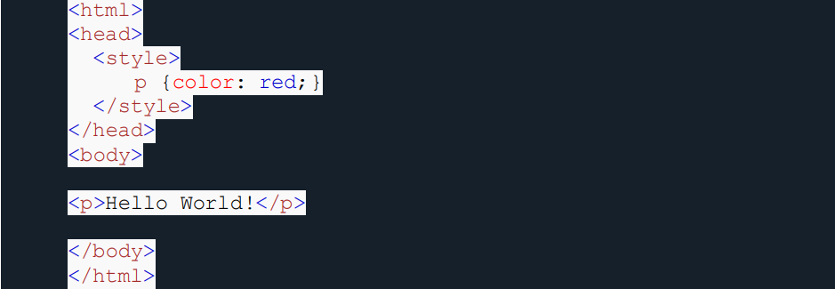
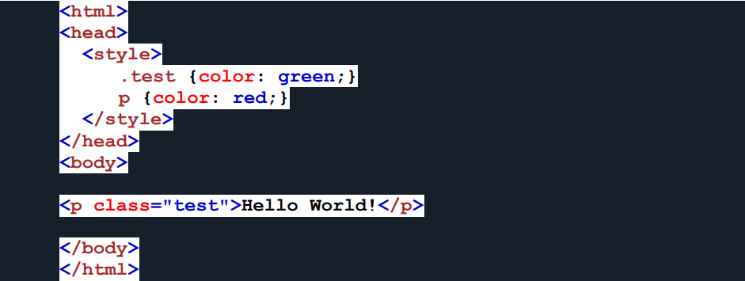
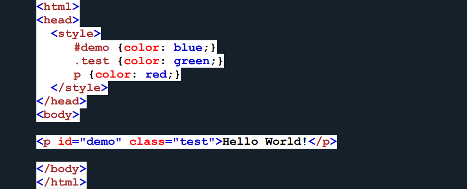

O que é Especificidade?
A especificidade em CSS é um conceito crucial que determina quais regras CSS são aplicadas a elementos HTML quando
há conflitos ou sobreposições. É um sistema de "pesos" atribuídos a seletores CSS, que permite ao navegador
decidir qual regra deve ter precedência sobre outra. A compreensão da especificidade é fundamental para
desenvolvedores web, pois ajuda a controlar a aparência e o layout de uma página da web de maneira organizada e
previsível.
A especificidade é calculada com base em quatro componentes principais: IDs, classes, pseudo-classes/atributos e
elementos. Cada um desses componentes contribui com um valor de peso à especificidade total de um seletor.
Especificamente, os IDs têm o maior peso, seguidos pelas classes, pseudo-classes/atributos e, por fim, elementos.
Por exemplo, um seletor com um ID tem uma especificidade maior do que um seletor com classes, e assim por
diante.
Quando várias regras CSS se aplicam a um elemento HTML, o navegador usa a especificidade para determinar qual regra
prevalece. Regras com maior especificidade têm prioridade e substituem regras com menor especificidade. No entanto,
se uma regra contiver a declaração !important, ela terá a máxima prioridade, independentemente da
especificidade.
A compreensão da especificidade é vital para evitar conflitos e garantir que o estilo seja aplicado conforme o
planejado. Desenvolvedores podem usar a especificidade de forma estratégica para controlar o design de uma página da
web, mas é importante usar essa ferramenta com moderação para manter o código CSS organizado e de fácil
manutenção.
Em resumo, a especificidade em CSS é um mecanismo que determina a hierarquia de estilos quando várias regras se
aplicam a um elemento HTML. Ao entender como a especificidade funciona, os desenvolvedores podem criar estilos
coerentes e evitar conflitos indesejados, contribuindo para uma experiência de usuário consistente e eficaz na
web.
Tipos de Seletores
- Seletor Universal (*):
- O seletor universal, representado por um asterisco (*), corresponde a todos os elementos em um documento
HTML.
- Ele é usado quando você deseja aplicar um estilo a todos os elementos na página.
- Exemplo : * { margin: 0; padding: 0; }
- Seletor de Elemento (ou Tipo):
- Este é o tipo mais simples de seletor, correspondendo a elementos HTML com base em seus nomes.
- Exemplo : p { color: blue; } seleciona todos os parágrafos na página e define a cor do
texto como azul.
- Seletor de Classe (.classe):
- O seletor de classe é representado por um ponto (.) seguido do nome da classe.
- Ele permite estilizar elementos que possuem a classe especificada no atributo class.
- Exemplo : .destaque { font-weight: bold; }
- Seletor de ID (#id):
- O seletor de ID é representado por uma cerquilha (#) seguida do nome do ID.
- Ele é usado para estilizar um elemento específico com um ID correspondente.
- Exemplo : #header { background-color: gray; }
- Seletor de Atributo ([atributo]):
- O seletor de atributo seleciona elementos com base na presença de um atributo HTML específico.
- Exemplo : a[target] { text-decoration: underline; } seleciona todos os links com o
atributo target.
- Seletor de Pseudo-classe (:pseudo-classe):
- As pseudo-classes selecionam elementos com base em estados ou interações do usuário.
- Exemplo : a:hover { color: red; } seleciona links quando o cursor do mouse está sobre
eles.
- Seletor de Pseudo-elemento (::pseudo-elemento):
- Os pseudo-elementos selecionam partes específicas de um elemento.
- Exemplo : p::first-line { font-style: italic; } seleciona a primeira linha de todos os
parágrafos e a torna itálica.
- Seletores de Combinadores:
- Estes combinam seletores para selecionar elementos com base em sua relação uns com os outros.
- Exemplos incluem o seletor de descendência (espaço), seletor de filho direto (>), seletor
de irmãos adjacentes (+) e seletor de irmãos gerais (~).
Como Funciona?
A especificidade é um conceito fundamental no CSS que determina quais regras de estilo são aplicadas a elementos
HTML quando ocorrem conflitos. Em outras palavras, a especificidade é uma maneira de o navegador da web decidir
qual regra CSS deve prevalecer quando várias regras se aplicam ao mesmo elemento.
A especificidade é um sistema de "pesos" atribuídos a seletores CSS, que define a prioridade de cada regra. Quanto
mais específico for um seletor, maior será seu peso, o que significa que ele terá mais prioridade na aplicação de
estilos. A compreensão da especificidade é essencial para desenvolvedores web, pois permite o controle preciso
sobre o design e a aparência de uma página.
A especificidade é calculada com base em quatro componentes principais:
- IDs : Os seletores com IDs têm a maior especificidade. Um seletor com um ID é representado por # seguido pelo
nome do ID. Por exemplo, #header tem alta especificidade.
- Classes, Pseudo-classes e Atributos : Os seletores que usam classes, pseudo-classes (como :hover) e
seletores de atributos têm especificidade intermediária. Um seletor de classe é representado por um ponto (.)
seguido pelo nome da classe, e um seletor de atributo é representado por [atributo=valor].
- Elementos : Os seletores que se baseiam apenas no tipo de elemento (por exemplo, p para parágrafos) têm uma especificidade menor em comparação com os IDs, classes e atributos.
- Seletor Universal (*) : O seletor universal (*) tem a menor especificidade. Ele corresponde a todos os elementos na página e é representado por um asterisco (*).
Ao calcular a especificidade, você atribui valores a cada componente do seletor e soma esses valores para obter a especificidade total de uma regra CSS. Por exemplo, o seletor #header .menu li a teria uma especificidade de 1.110 (ID = 1.000, Classes = 100, Elementos = 10).
Quando várias regras CSS se aplicam ao mesmo elemento, o navegador usa a especificidade para determinar qual regra tem prioridade. A regra com a maior especificidade será a que prevalece. No entanto, se uma regra contiver a declaração !important, ela terá prioridade máxima, independentemente da especificidade.
Entender a especificidade é fundamental para evitar conflitos e garantir que as regras de estilo sejam aplicadas conforme o desejado. É uma ferramenta poderosa que permite aos desenvolvedores controlar o design de uma página da web de maneira organizada e previsível. A especificidade torna possível estilizar elementos específicos com precisão e criar interfaces web visualmente atraentes.
Exemplos
Exemplo 1
Neste exemplo, usamos o elemento “p” como seletor e especificamos
uma cor vermelha para este elemento. O texto ficará vermelho:

Exemplo 2
Neste exemplo, adicionamos um seletor de classe (chamado "teste") e
especificamos uma cor verde para esta classe. O texto agora será verde
(embora tenhamos especificado uma cor vermelha para o seletor de
elemento "p"). Isso ocorre porque o seletor de classe recebe maior
prioridade:

Exemplo 3
Neste exemplo, adicionamos o seletor de id (denominado "demo"). O
texto agora ficará azul, porque o seletor de id tem maior prioridade:

Quadro de Pontuações
|
important |
inline |
id |
class |
seletor |
especificidade |
| body |
0 |
0 |
0 |
0 |
1 |
1 |
| header |
0 |
0 |
0 |
0 |
1 |
1 |
| nav |
0 |
0 |
0 |
0 |
1 |
1 |
| nav a |
0 |
0 |
0 |
0 |
1 |
1 |
| menu |
0 |
0 |
1 |
0 |
0 |
100 |
| nav a:hover |
0 |
0 |
0 |
0 |
1 |
1 |
| section |
0 |
0 |
0 |
0 |
1 |
1 |
| menu-btn |
0 |
0 |
1 |
0 |
0 |
100 |
| table, th, td |
0 |
0 |
0 |
0 |
1 |
1 |
| quadro |
0 |
0 |
1 |
0 |
0 |
100 |
| td |
0 |
0 |
0 |
0 |
1 |
1 |